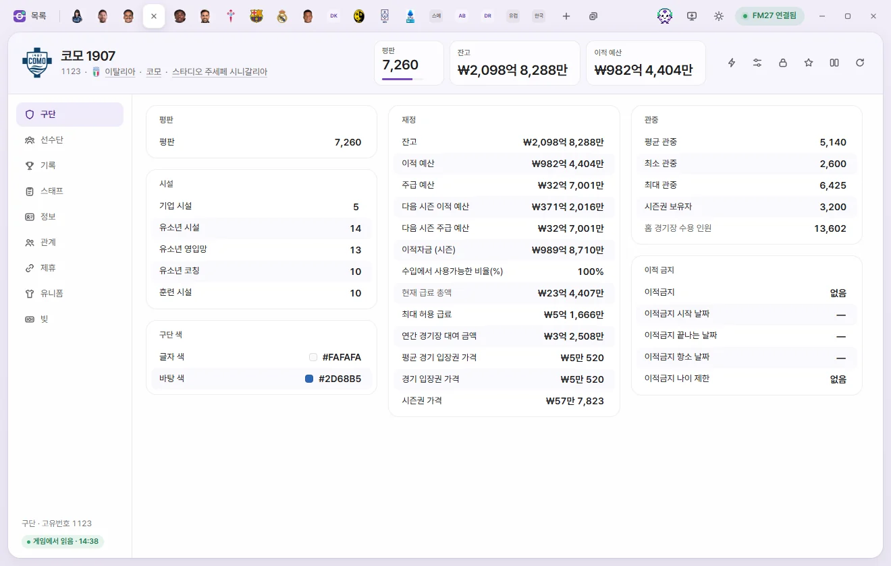
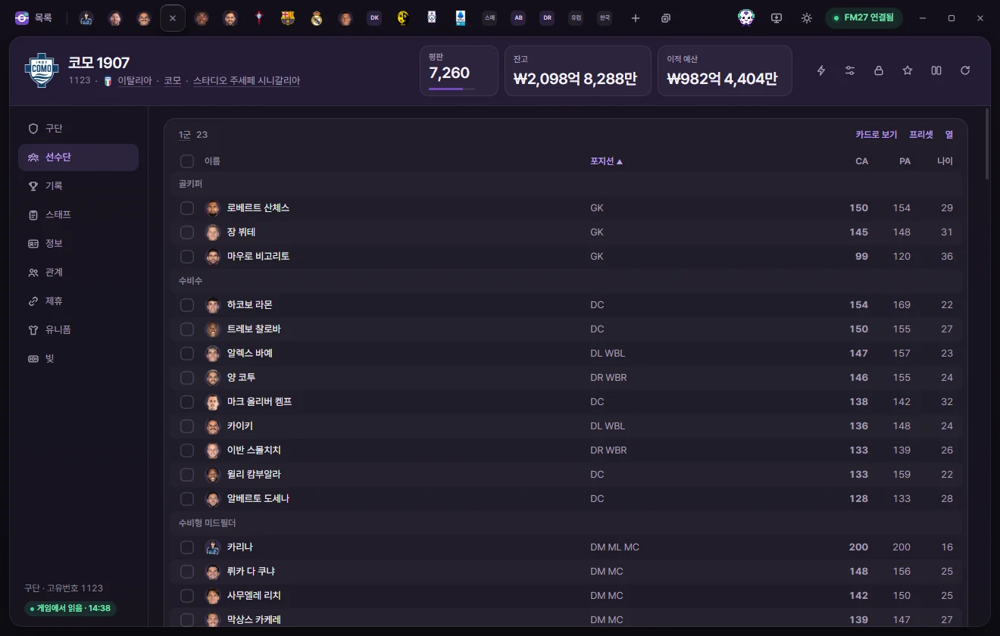
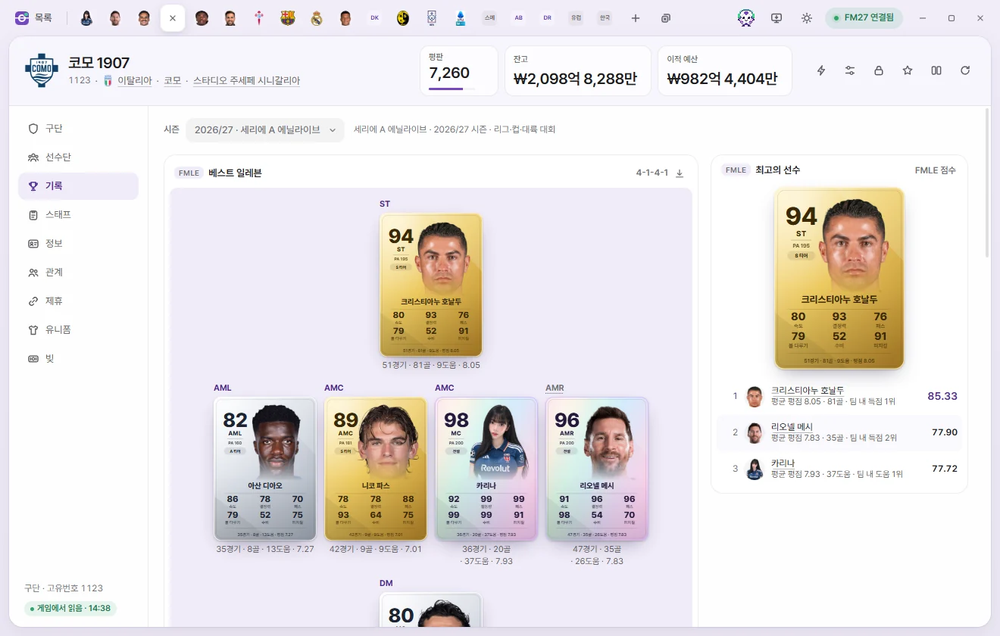
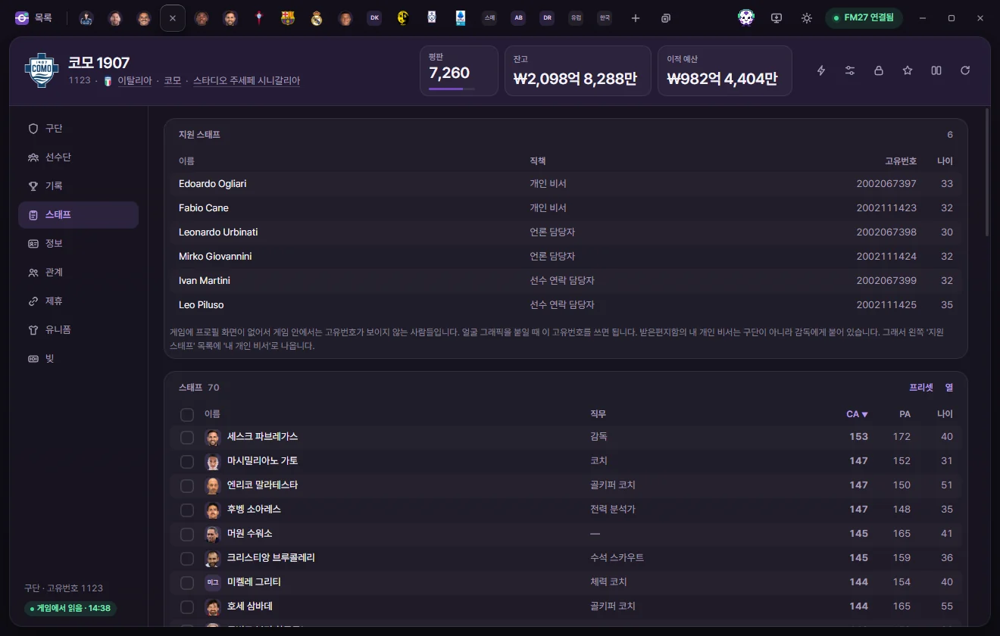
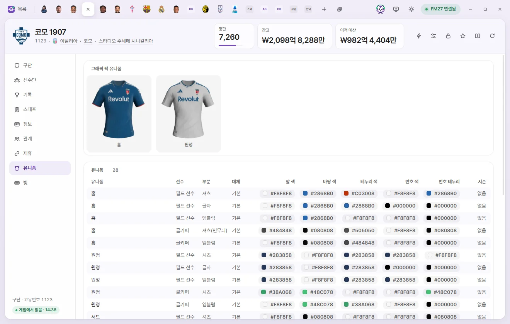
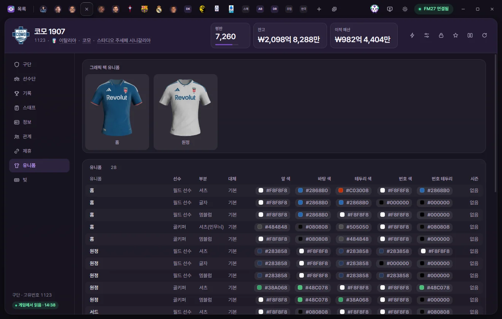

편집 탭
구단
구단의 평판, 시설, 재정, 이적 금지, 관중, 색을 고치고, 선수단·스태프·구단 기록을 보고, 제휴·유니폼·빚을 고치는 방법입니다.


탭 여는 법
구단 목록에서 이름을 누릅니다. 선수·스태프 탭의 소속 구단처럼 밑줄로 보이는 구단 이름을 눌러도 열립니다. 값 고치기와 저장은 선수 탭과 같습니다. 선수 페이지의 공통 설명
탭 머리
- 구단 그림은 그래픽 팩의 로고가 있으면 로고, 없으면 구단 색(바탕 색·글자 색)으로 칠한 머리글자입니다.
- 이름 아래에 고유번호, 국가, 연고 도시, 홈 경기장이 보입니다. 누르면 그 탭이 열립니다.
- 숫자 카드는 평판(0~10000), 잔고, 이적 예산입니다. 눌러서 바로 숫자를 칩니다. 금액은 설정에서 고른 통화로 보입니다.
- 오른쪽 단추는 ⚡ 게임 에디터 기능, 프리셋, 고정, 즐겨찾기, 비교, 게임에서 다시 읽기입니다. 구단의 ⚡ 메뉴에는 라이선스 유니폼 쓰기·안 쓰기, 보드 목표 지우기, 서포터 목표 지우기가 있습니다. 게임 에디터 (⚡)
하위 페이지는 구단, 선수단, 기록, 스태프, 정보, 관계, 제휴, 유니폼, 빚 9개입니다.
구단
금액 범위는 게임이 기억하는 파운드 기준입니다. 화면에는 설정에서 고른 통화로 보이고 그 통화로 입력합니다.
평판·시설
| 칸 | 하는 일 | 고칠 수 있는 범위 |
|---|---|---|
| 평판 | 구단 평판 | 0~10000 |
| 훈련 시설 | 1~20 | |
| 유소년 시설, 유소년 코칭, 유소년 영입망 | 값이 없는 구단은 '없음' | 1~20 |
| 기업 시설 | 1~20 |
재정
| 칸 | 하는 일 | 고칠 수 있는 범위 |
|---|---|---|
| 잔고 | 구단이 가진 돈 | −10억~20억 |
| 이적 예산 | 지금 남은 이적 자금 | 0~20억 |
| 주급 예산 | 설정에 따라 월급·연봉 예산으로 보입니다 | 0~20억 |
| 다음 시즌 이적 예산, 다음 시즌 주급 예산 | 0~20억 | |
| 이적자금 (시즌) | 시즌 처음에 받은 이적 자금 | 0~20억 |
| 수입에서 사용가능한 비율(%) | 선수를 팔아 번 돈 가운데 이적 예산으로 쓸 수 있는 비율 | 0~100% |
| 현재 급료 총액 | 보기만 | |
| 최대 허용 급료 | 한 사람에게 줄 수 있는 가장 큰 주급 | 0~1억 |
| 연간 경기장 대여 금액 | 남의 경기장을 빌려 쓰는 구단이 해마다 내는 돈 | 0~20억 |
| 평균 경기 입장권 가격 | 플레이할 수 있는 리그의 구단에만 있는 값 | 0~10만 |
| 경기 입장권 가격 | 값이 없는 구단은 '없음' | 0~10만 |
| 시즌권 가격 | 0~100만 |
이적 금지
| 칸 | 하는 일 | 고칠 수 있는 범위 |
|---|---|---|
| 이적금지 | 없음, 신탁 관리 중, 이적 금지, 재정 규정 위반으로 인한 이적 금지, 소속 선수 영입 불가 | 선택지 |
| 이적금지 시작 날짜, 끝나는 날짜, 항소 날짜 | 날짜 | |
| 이적금지 나이 제한 | 이 나이까지의 선수만 영입할 수 있다는 제한. 0은 없음 | 0~40 |
관중·구단 색
| 칸 | 하는 일 | 고칠 수 있는 범위 |
|---|---|---|
| 평균 관중, 최소 관중, 최대 관중 | 0~25만 | |
| 시즌권 보유자 | 0~25만 | |
| 홈 경기장 수용 인원 | 바꾸려면 경기장 탭에서 고칩니다 | 보기만 |
| 글자 색, 바탕 색 | 구단 색. 누르면 색 고르기 창이 열립니다 | 색 |
선수단


이 구단에서 뛰는 선수가 게임이 실제로 만든 팀별로 나뉘어 보입니다. 1군, 그다음 2군·B팀, 그다음 나이 많은 유소년 팀부터입니다. 맨 아래에는 임대 보낸 선수 표가 있습니다. 보기만 하는 페이지이고, 이름을 누르면 선수 탭이 열립니다.
- 표 제목(예: 1군)을 누르면 그 팀의 탭이 열립니다.
- 열 머리를 누르면 그 열로 정렬하고, 다시 누르면 반대로 정렬합니다. 포지션으로 정렬하면 골키퍼, 수비수, 윙백 같은 묶음으로 나뉩니다.
- 열: 표에 보일 열을 더하고, 빼고, 순서를 바꿉니다. 이 PC에 기억되고 모든 구단에 같이 쓰입니다. '기본으로'는 처음 열로 돌립니다.
- 프리셋: 이 표의 모든 사람에게 프리셋이나 직접 정한 수정을 적용합니다. 프리셋
- 카드로 보기: 선수를 FMAX 선수 카드로 봅니다. 티어순·포지션순으로 늘어놓고, PNG로 저장으로 그림 파일을 만들고, 목록으로 보기로 돌아옵니다. 통계·선수 카드·기록실
- 줄 앞의 네모로 사람을 고르면 아래에 막대가 나옵니다. 영입 명단에 넣기, 프리셋 적용, 탭으로 열기, 선택 해제가 있고, 오른쪽 클릭으로 더 많은 기능을 씁니다. Shift를 누른 채 고르면 여러 줄을 한 번에 고릅니다.
선수 목록을 아직 읽지 않았으면 먼저 읽어 옵니다.
기록


세이브를 시작한 뒤 이 구단 1군의 리그·컵·대륙 대회 기록으로 FMAX가 고른 베스트 일레븐, 최고의 선수, 부문별 순위입니다. 보기만 합니다.
- 시즌: 한 시즌이나 '세이브 시작 뒤 통산'을 고릅니다. 통산에서는 레전드 XI(구단에서 쌓은 기여)와 최고 시즌 XI(선수마다 이 구단에서 가장 좋았던 시즌)를 고릅니다.
- 한 시즌에는 그 시즌 팀 경기 시간의 3분의 1 이상 뛴 선수만 들어갑니다.
- 카드는 그 시즌 끝에 FMAX가 남긴 카드이고, 없으면 지금 카드를 씁니다. 시즌 끝 카드는 설정의 '시즌 끝 기록 남기기'가 켜져 있을 때 남습니다.
- 일레븐 그림은 PNG로 저장할 수 있습니다.
기록이 아직 없으면 '이 구단의 기록이 아직 없습니다'가 보입니다. 1군이 리그 경기를 치르면 나옵니다. 기록실 화면은 통계·선수 카드·기록실에 있습니다.
스태프


- 지원 스태프: 이 구단 감독의 개인 비서, 언론 담당자, 선수 연락 담당자입니다(이름, 직책, 고유번호, 나이). 게임 안에서 고유번호가 보이지 않는 사람들이라, 얼굴 그래픽을 붙일 때 여기의 고유번호를 씁니다. 내 개인 비서는 구단이 아니라 감독에게 붙어 있어서 여기에 없고, 지원 스태프 목록에 '내 개인 비서'로 나옵니다.
- 스태프: 이 구단의 스태프 표입니다. 선수단 표처럼 정렬, 열, 프리셋, 고르기 막대를 씁니다.
정보
기본 정보
| 칸 | 하는 일 | 고칠 수 있는 범위 |
|---|---|---|
| 고유번호, 이름, 짧은 이름, 별명, 해시태그 | 보기만 | |
| 국가, 연고 국가, 연고 도시, 홈 경기장 | 누르면 그 탭이 열립니다 | 보기만 |
| 훈련장 | 보기만 | |
| 선수 성별 | 구단 선수들의 성별 | 보기만 |
| 구단 상태 | 프로, 세미 프로, 아마추어. 올스타 같은 특별 구단은 이 상태에 해당하는 부분만 읽고 씁니다 | 선택지 |
| 창단 연도 | 0은 없음 | 1800~2100 |
팀 목록에는 이 구단의 팀(팀 종류, 팀 이름)이 있습니다. 누르면 팀 탭이 열립니다.
기타
| 칸 | 하는 일 | 고칠 수 있는 범위 |
|---|---|---|
| 갑부 구단주 유형 | 없음, 전면 후원자, 배후 후원자, 보증 후원자, 보증 후원자 (수익 기대) | 선택지 |
| 유소년 중시 정도 | 1~20 | |
| 소유권 종류 | 유한 책임 회사, 주식회사, 회원 소유, 컨소시엄 등. 많은 구단이 '정하지 않음'입니다 | 선택지 |
| 의장 직함 | 구단주, 회장, 사장, 창단자 | 선택지 |
| 사기 | 구단의 사기. 0은 값이 없는 구단입니다. 게임 화면에서 이 값의 뜻은 확인하지 않았습니다 | 0~20 |
| 소셜 미디어 팔로워 | 값이 없는 구단(−1)이 대부분입니다 | 0~20억 |
| 구단주신임도 | 큰 구단일수록 높습니다 | 0~10000 |
후원 및 기타
스폰서, 중계권, 보조금 같은 구단 수입(수입 유형, 합계 가치, 시작 일자, 종료 일자)입니다. 금액은 계약 전체의 가치입니다. 지금은 보기만 합니다.
관계
구단의 관계 기록(종류, 대상, 내용)입니다. 라이벌 구단에는 이유(같은 지역, 경쟁 관계, 과거가 있는 관계)와 수치가 있고, 좋아하는 인물에는 그 인물이 구단에서 한 일(선수, 감독, 구단주, 창단자 등)이 있습니다.
좋아하는·싫어하는 인물과 구단의 수치는 눌러서 0~100으로 고칠 수 있습니다(저장 필요). 그 밖의 기록을 더하거나 빼는 기능은 구단 탭에 없습니다. '기타'는 이름이 알려지지 않은 기록입니다.
제휴
모구단, 제휴 구단, 관계(일반 제휴, 하위 팀, 피더 구단, B팀, 우호 관계 등), 시작, 끝, 친선 확률, 급료 분담, 연간 비용이 보입니다. 모구단과 제휴 구단 두 쪽 탭에 같은 기록이 보입니다.
| 칸 | 하는 일 | 고칠 수 있는 범위 |
|---|---|---|
| 친선 확률(%) | 두 구단이 친선 경기를 잡을 확률 | 0~100 |
| 급료 분담(%) | 모구단이 임대 보낸 선수 급료를 몇 % 내는지 | 0~100 |
| 연간 비용 | 0~20억 파운드 |
이 세 칸은 값이 정해진 기록만 고칠 수 있습니다. '없음'은 게임이 정하지 않은 값이라 고칠 수 없습니다. 제휴를 새로 맺거나 끊는 기능은 없습니다.
유니폼



홈·원정·서드 유니폼마다 셔츠·바지·양말 등의 색이 줄마다 있습니다(유니폼, 선수, 부분, 대체, 색들, 시즌). 필드 선수용과 골키퍼용이 나뉘고, '대체'는 상대 팀과 색이 겹칠 때 입는 바지·양말입니다.
- 앞 색, 바탕 색, 테두리 색, 번호 색, 번호 테두리를 누르면 색 고르기 창이 열립니다. 저장을 눌러야 게임에 들어갑니다.
- 바뀐 색이 게임 화면에 언제 보이는지는 아직 확인하지 않았습니다.
- 그래픽 팩에 이 구단의 유니폼 그림이 있으면 맨 앞에 그래픽 팩 유니폼 카드가 보입니다. 그래픽 팩
빚
구단이 진 빚과 대출이 하나씩 보입니다(빌린 곳, 원금, 월 상환액, 이자만 냄, 시작, 끝 등).
| 칸 | 하는 일 | 고칠 수 있는 범위 |
|---|---|---|
| 원금 | 처음 빌린 돈. 남은 빚이 아닙니다 | 0~20억 파운드 |
| 월 상환액 | 매달 갚는 돈 | 0~20억 파운드 |
| 그중 이자 | 월 상환액 가운데 이자 | 0~20억 파운드 |
| 빌린 곳, 이자만 냄, 시작, 끝 | '이자만 냄'인 빚은 이자만 갚습니다 | 보기만 |
바꾼 금액이 게임 재정에 언제 어떻게 보이는지는 아직 확인하지 않았습니다.